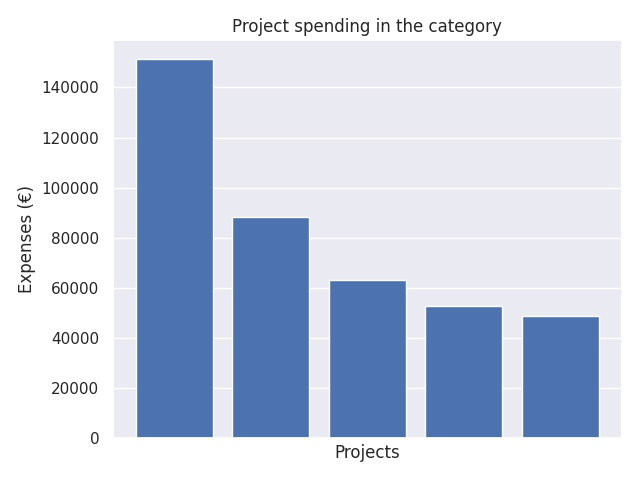

Perusopetuksen innovaatio- ja kokeiluhaku 2018
Category summary
80.9K spent on average
151K highest spending

Reports in the category
Tampereen kaupunki
Project name: Hyvinvointia ja digiterveyttä kouluihin
151K spent
Nakkilan kunta
Project name: Sisukkaat - teknologiaoppimisen ja -opetuksen edistäminen osallistavassa opetuksessa
88.2K spent
Itä-Suomen yliopisto
Project name: Digitaalinen dialogi kodin ja koulun välillä - huoltajat kumppaneina kehittämisen foorumissa
63.3K spent
Tampereen Yliopisto
Project name: Nähdään ja kohdataan yhdessä!
53K spent
Oulun Steinerkoulun kannatusyhdistys ry
Project name: Waldorf100 - Steinerkoulut 100 vuotta: Bees & Trees
48.7K spent